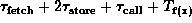
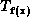

Data Structures and Algorithms
with Object-Oriented Design Patterns in Java
Data Structures and Algorithms
with Object-Oriented Design Patterns in JavaThe running time performance of the Java Virtual Machine is given by a set of axioms which we shall now postulate. The first axiom addresses the running time of simple variable references:
Axiom The time required to fetch an operand from memory is a constant,, and the time required to store a result in memory is a constant,
.
According to Axiom  ,
the assignment statement
,
the assignment statement
y = x;has running time
We shall apply Axiom to manifest constants too:
The assignment
y = 1;also has running time
The next axiom addresses the running time of simple arithmetic operations:
Axiom The times required to perform elementary arithmetic operations, such as addition, subtraction, multiplication, division, and comparison, are all constants. These times are denoted by,
,
,
, and
, respectively.
According to Axiom ,
all the simple operations can be accomplished in a fixed
amount of time.
In order for this to be feasible,
the number of bits used to represent a value must be fixed.
In Java, the number of bits needed to represent a number
range from 8 (for bytes )
to 64 (for longs
and doubles ).
It is precisely because the number of bits used is fixed
that we can say that the running times are also fixed.
If arbitrarily large numbers are allowed,
then the basic arithmetic operations can take an arbitrarily
long amount of time.
By applying Axioms and ,
we can determine that the running time of a statement like
y = y + 1;is . This is because we need to fetch two operands, y and 1; add them; and, store the result back in y.
Java syntax provides several alternative ways to express the same computation:
y += 1; ++y; y++;We shall assume that these alternatives require exactly the same running time as the original statement.
The third basic axiom addresses the method call/return overhead:
Axiom The time required to call a method is a constant,, and the time required to return from a method is a constant,
.
When a method is called, certain housekeeping operations need to be performed. Typically this includes saving the return address so that program execution can resume at the correct place after the call, saving the state of any partially completed computations so that they may be resumed after the call, and the allocation of a new execution context (stack frame or activation record ) in which the called method can be evaluated. Conversely, on the return from a method, all of this work is undone. While the method call/return overhead may be rather large, nevertheless it entails a constant amount of work.
In addition to the method call/return overhead, additional overhead is incurred when parameters are passed to the method:
Axiom The time required to pass an argument to a method is the same as the time required to store a value in memory,
The rationale for making the overhead associated with parameter passing the same as the time to store a value in memory is that the passing of an argument is conceptually the same as assignment of the actual parameter value to the formal parameter of the method.
According to Axiom ,
the running time of the statement
y = f (x);would be , where  is the running time of method f for input x. The first of the two stores is due to the passing of the parameter x to the method f; the second arises from the assignment to the variable y.
 Copyright © 1998 by Bruno R. Preiss, P.Eng. All rights reserved.
Copyright © 1998 by Bruno R. Preiss, P.Eng. All rights reserved.